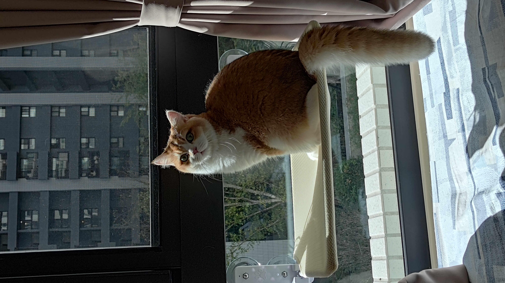
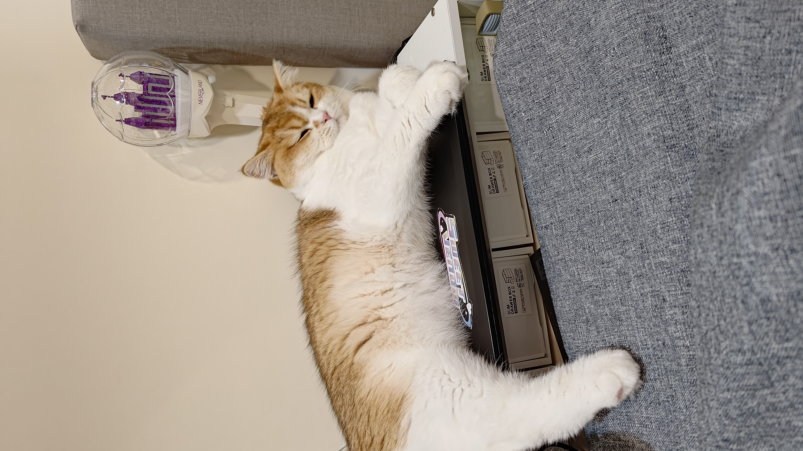
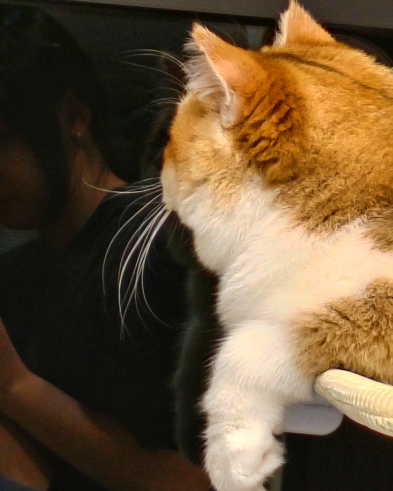
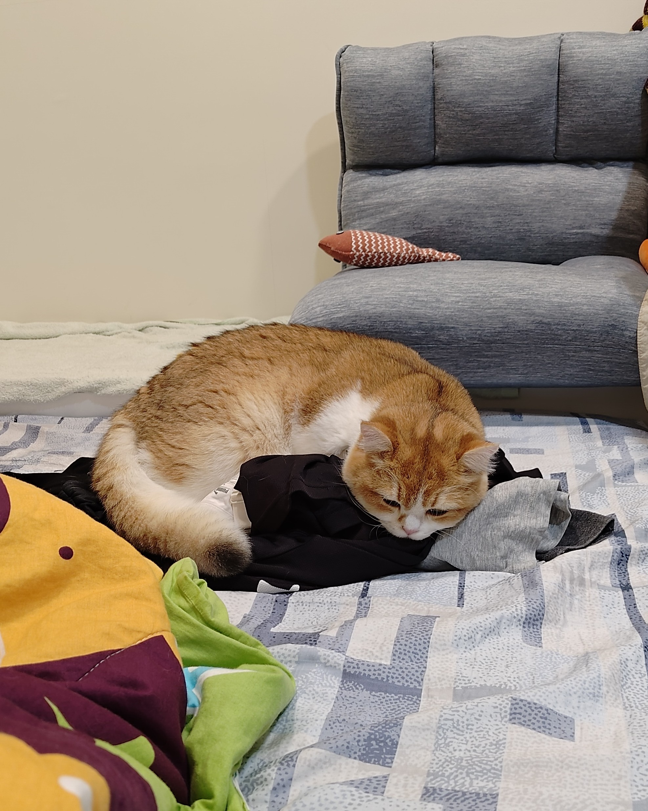
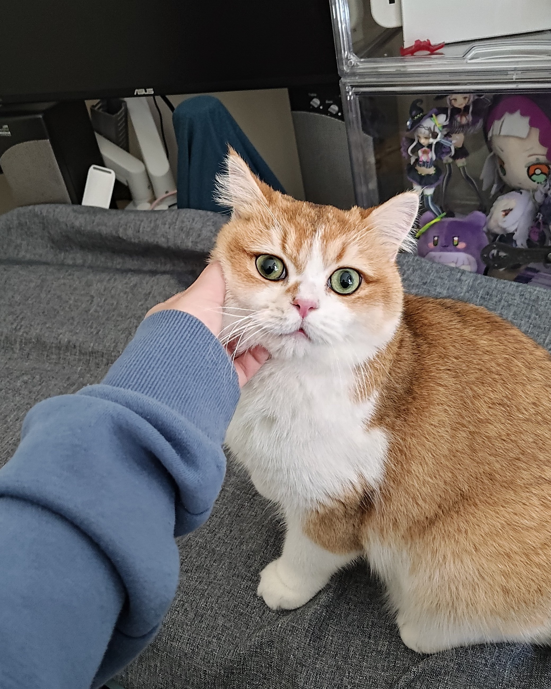
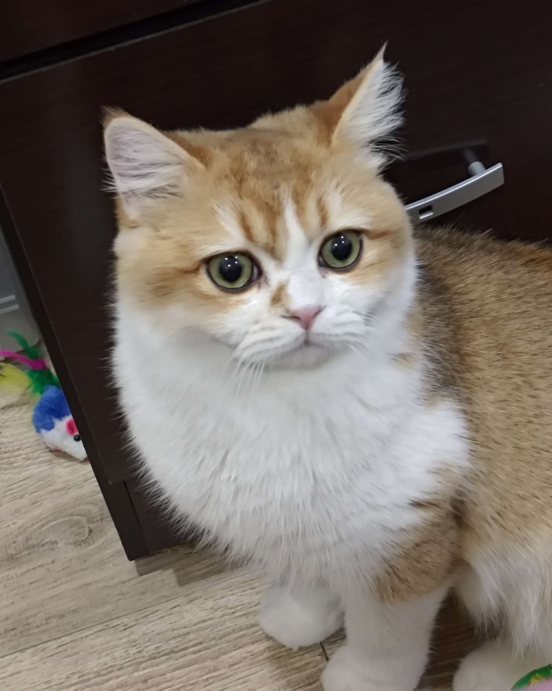
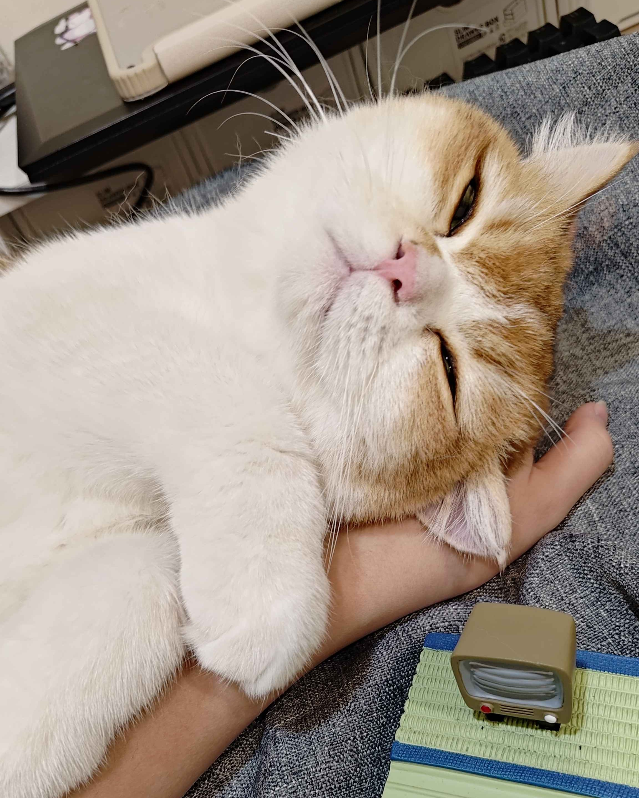
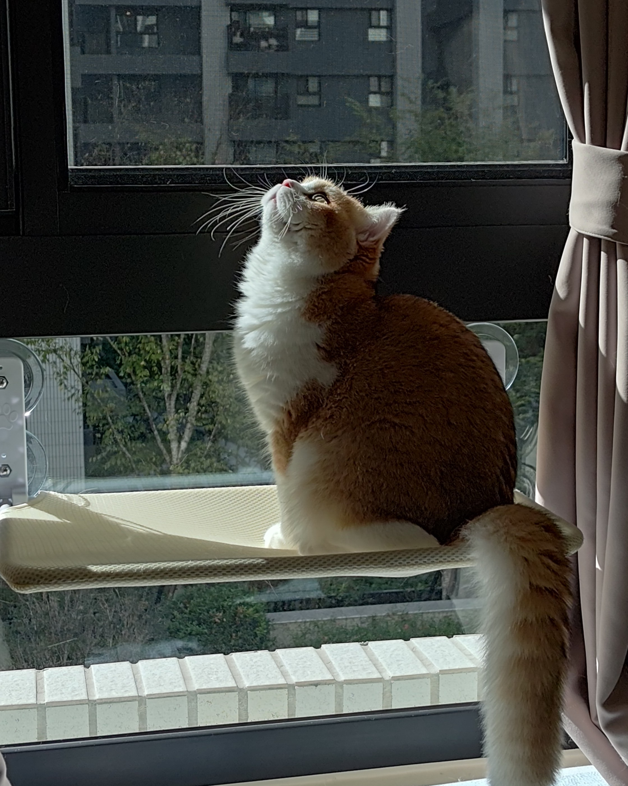
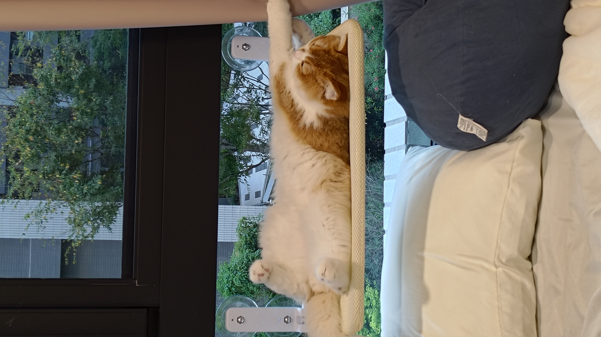

基本資料
- 名字：憨吉
- 種類：貓咪
- 品種：英國短毛貓
- 年齡：9 個月
- 性別：公（已結紮公公貓）
- 特徵：金漸層加白、圓眼、綠色瞳色、粉色肉墊與鼻子
簡短介紹：
憨吉是一隻活潑又親人的英國短毛貓，
圓圓的眼睛搭配金漸層毛色，
是家中最療癒最特別的小可愛。
他是我們在網路上花很多時間後找到的優良貓舍，在實際去看過現場後決定帶回家的小朋友，
憨吉這個名字是我根據他的特徵想的，像烤地瓜一樣溫暖，毛色也像地瓜一樣，外層是咖啡色、內層是金色，
經過多個名字投票後，憨吉就得到這個名字了。

生活習性
- 個性：有點膽小、充滿好奇心、內向、搞怪
- 喜歡的事物： 吃飯、玩逗貓棒、玩小老鼠玩具、玩小魚布偶、 玩繩子類的東西、大完便暴衝、你追我跑、 進廁所探險、躺在各種地方睡覺（包括我的筆電）、 用電腦時在面前擋視線、抓滑鼠標誌、把小老鼠玩具丟到水碗裡
- 不喜歡的事物：火雞肉罐頭、太大的聲音、剃毛、吹風機、把它擋在廁所外面
- 日常作息：規律作息、吃飽就睡、吃飯時間到會聽到聲音就跑去吃、罐罐時間到會跑來催你弄罐罐、生物時鐘比人還準、 吃完飯會喝幾口水、睡前會比較嗨這時就會玩玩具






照片展示
這邊是憨吉的可愛照片精選~

照顧方式與注意事項
- 注意事項：環境清潔很重要、注意四季跟替、哪些東西貓咪不能接觸一定要注意、養之前一定要做好功課
- 特別需求：是否需要保健食品都需要透過觀察來決定、英短鼻子較短不要讓他玩到太喘、記得擦眼屎及耳屎
- 如何相處：不要強迫、要有耐心、貓貓不會講話只能用別的方式跟你說他不開心、陪他玩
- 新手可能會遇到的困難：剛到家貓貓害怕是正常的喔，讓他自己冷靜就好，不要去看他不要急著互動。